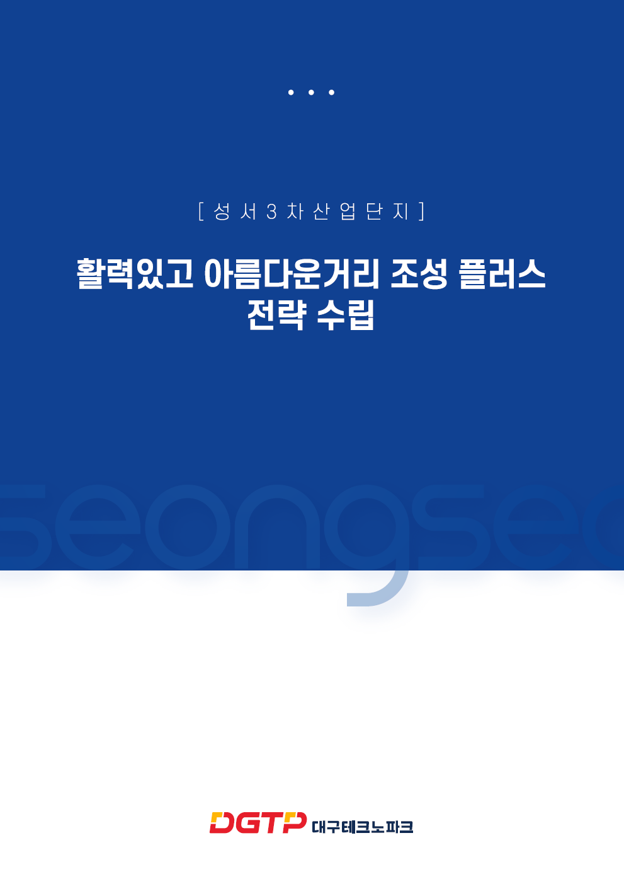
Research
성서3차 산업단지 활력있고 아름다운거리 조성사업
청년층과 근로자 중심의 공간 활력 전략을 바탕으로 공공거리 조성 방향을 제안한 연구용역 프로젝트
2026
Designer
JEONG HYEON UK
Environment Design
Public Design
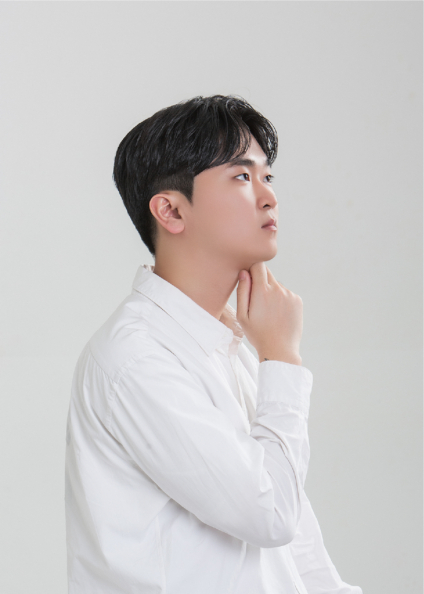
정현욱
JEONG HYEON UK
# 도전적인 # 유연한 # 긍정적인
제안서 작성 능력
Adobe Photoshop
Adobe Illustrator
Rhinoceros
Enscape
D5 Render
AI 활용 능력
Research Project
산업단지, 공공거리, 공공공간을 대상으로 현장조사, 전략 수립, 디자인 시각화, 보고서 작성까지 수행한 프로젝트를 정리한 파트입니다.

청년층과 근로자 중심의 공간 활력 전략을 바탕으로 공공거리 조성 방향을 제안한 연구용역 프로젝트
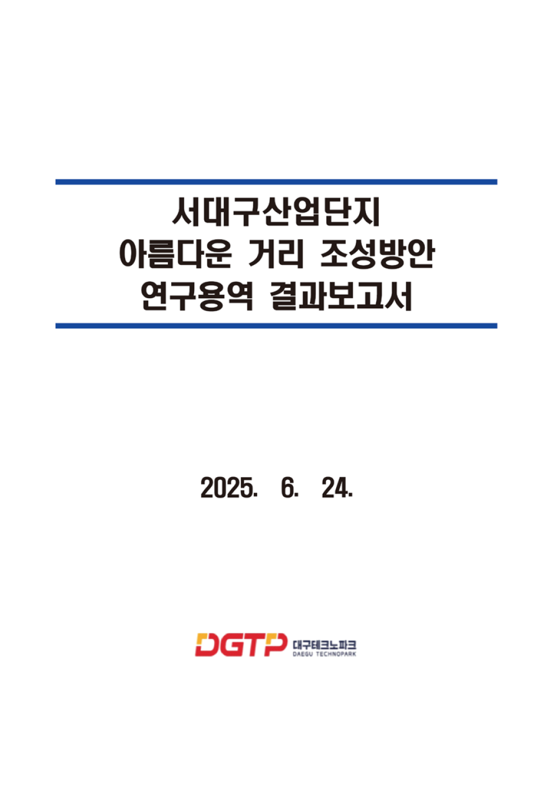
산업단지의 장소성 재해석과 보행 친화적 거리 조성을 위한 공간 브랜딩 및 시각화 프로젝트
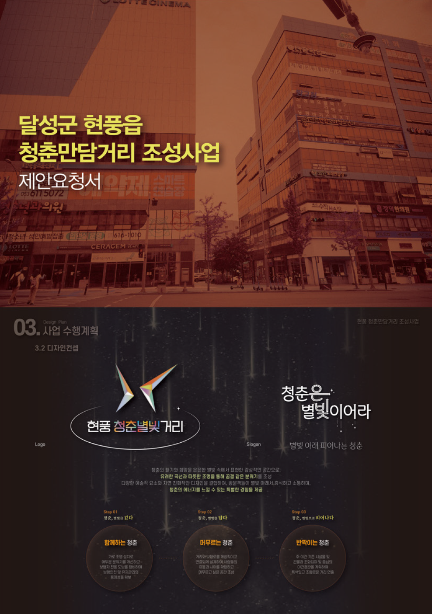
청년층 중심의 거리 활성화 컨셉과 야간경관 아이덴티티를 시각적으로 전개한 공공환경디자인 프로젝트
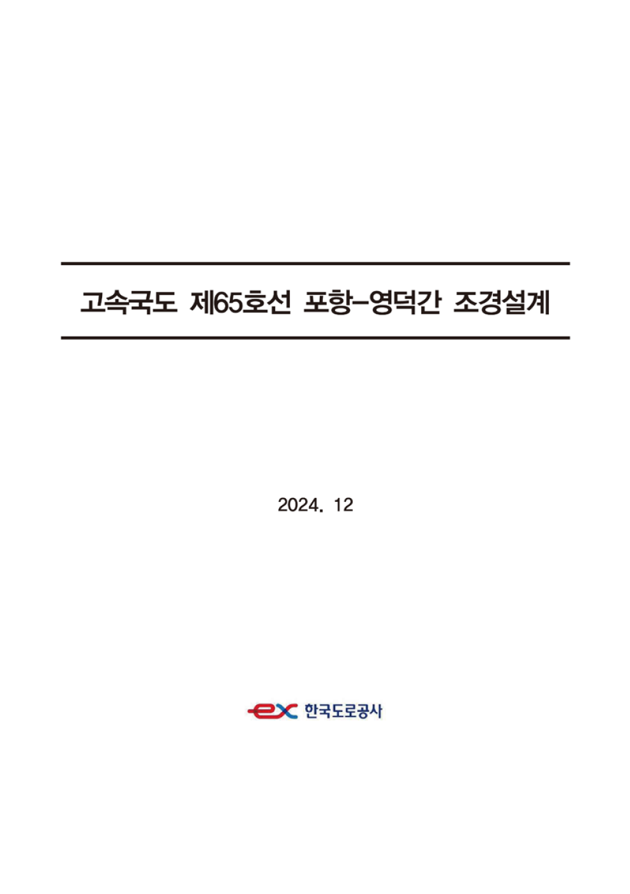
조형물 디자인과 공간적 스토리텔링을 중심으로 고속도로 경관 요소를 설계한 프로젝트
Team Project
팀 단위로 진행된 공간기획 및 환경디자인 프로젝트를 정리한 파트입니다. 역할 분담과 협업 과정, 시각화 결과물을 함께 보여주는 데 초점을 두었습니다.
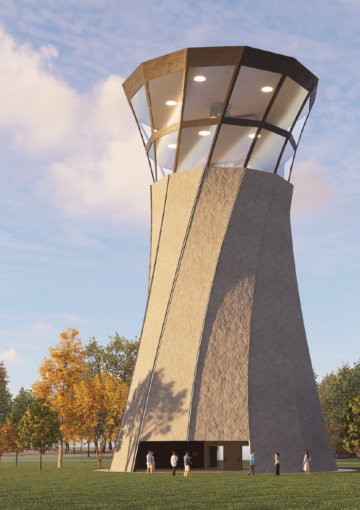
팀 협업을 통해 컨셉 도출, 공간 구성안 제작, 시각화 결과물을 함께 완성한 프로젝트
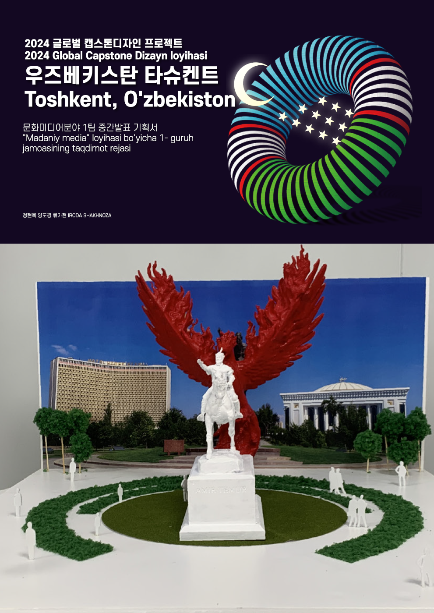
공공장소의 기능과 경험을 분석하고 팀 내 역할 분담을 통해 제안 보드와 발표 자료를 제작한 프로젝트
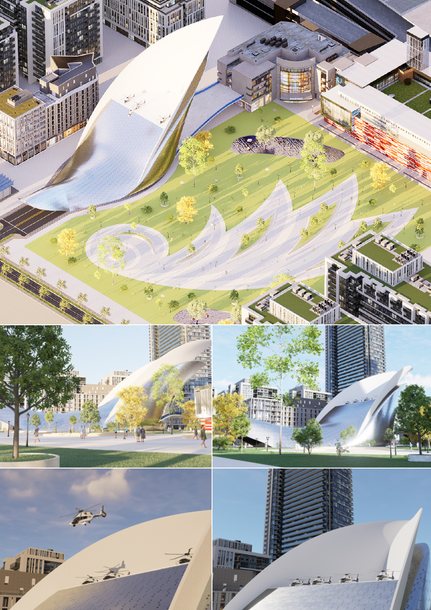
공공장소의 기능과 경험을 분석하고 팀 내 역할 분담을 통해 제안 보드와 발표 자료를 제작한 프로젝트
Personal Project
개인 기획을 바탕으로 디자인 컨셉을 도출하고, 비주얼 아이덴티티와 3D 시각화를 통해 결과물을 전개한 프로젝트 파트입니다.
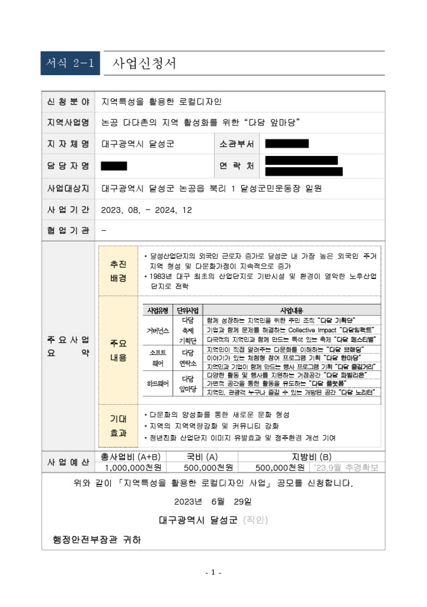
독립적인 스토리텔링을 바탕으로 공간 컨셉을 전개하고 시각화까지 연결한 개인 작업
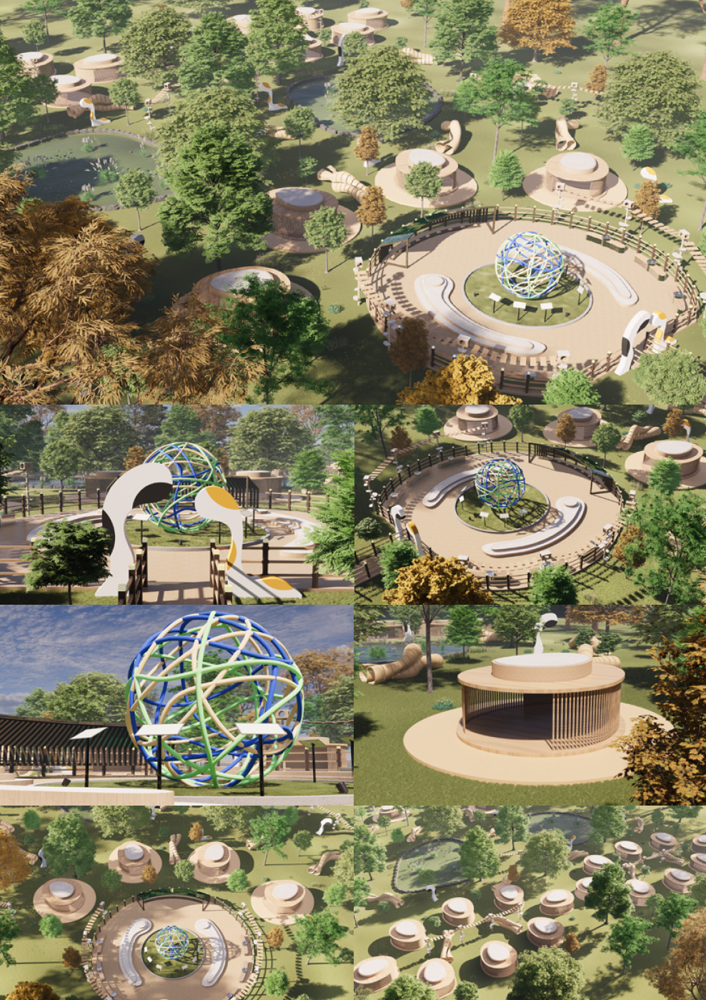
공공성과 장소성을 주제로 개인적으로 탐구하고 형태와 구조를 실험한 작업
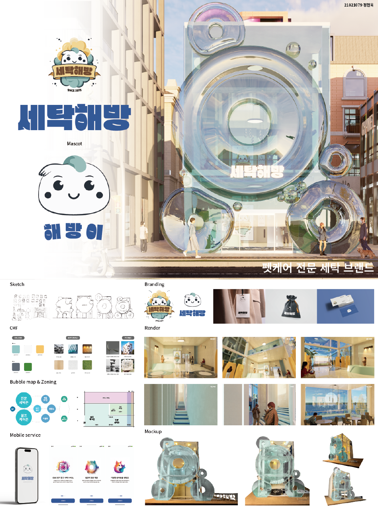
공공성과 장소성을 주제로 개인적으로 탐구하고 형태와 구조를 실험한 작업
Contest
공공성과 창의성을 함께 보여줄 수 있는 공모전 결과물을 정리한 파트입니다. 아이디어, 제안서 구성, 시각화 완성도를 중심으로 보여줍니다.
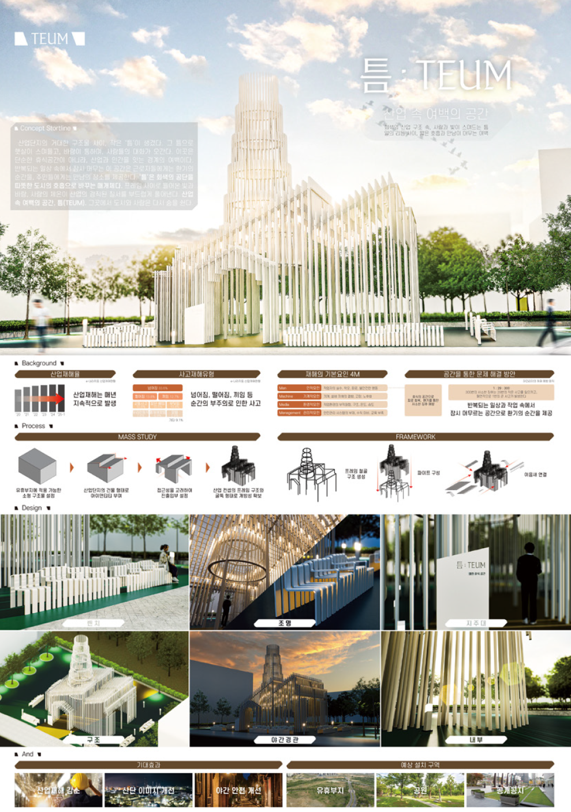
문제 해결 중심의 아이디어를 보드와 시각화 중심으로 구성한 공모전 제출 작업
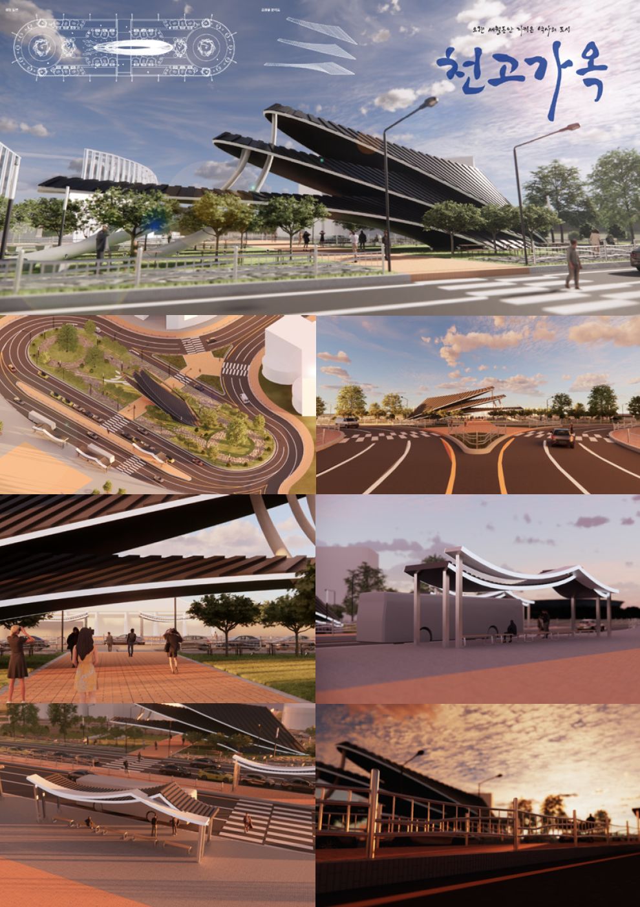
심사 기준에 맞춰 컨셉 정리, 설계 흐름, 결과 시각화를 하나의 흐름으로 정리한 프로젝트